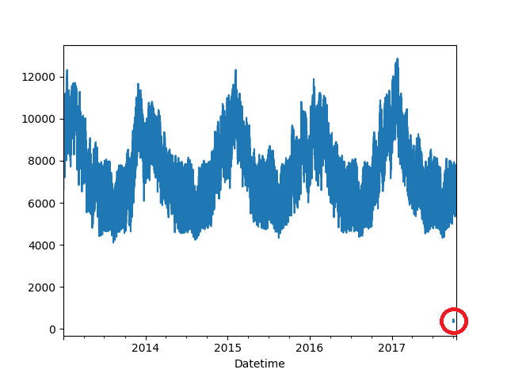
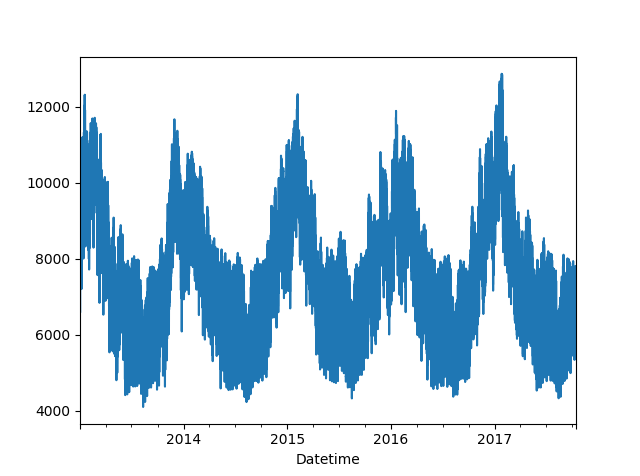

Clustering large number of time series.
Table of Contents
1 Project Summary:
The dynamic factor model is a well established modeling strategy when we face a large number of time series which makes it impossible to use standard multivariate techniques such as VARIMA models. Those time series could share some common factor but also the factors can have a group structure. Ando and Bai (2016) propose an iterative procedure for estimating a factor model with grouped factor structures. The starting step of the procedure relies on k-means algorithm and Euclidean metric on the original time series. It is known that Euclidean distance does not take into account the dependence among the individuals (time series in our case). In this project, we will consider other algorithms and metrics as starting step of the Ando and Bai’s procedure. We will evaluate the forecasting performance of the original and the proposed modification. The evaluation will consist of an extensive simulation study and its application to time series of the electricity market.
- Professor: Andrés Alonso (andres.alonso@uc3m.es) and Daniel Peña (daniel.pena@uc3m.es).
2 Preparing the data
import pandas as pd import numpy as np from os.path import join import glob from scipy.stats.mstats import zscore import src.helpers as helpers
I have downloaded all the regions definitive annual data from 2013 to 2015, the consolidated 2016 data as well as the running 2017 data.
data_path = "data" data = pd.concat([ pd.read_table( # file, encoding="mac_roman", delimiter="\t", engine="python", file, encoding="iso8859_1", delimiter="\t", engine="python", index_col=False).iloc[1:-1, :] for file in glob.glob(join(data_path, "*.xls")) ])
After reading the data I made sure that the "Consommation" is read as a numeric and read the date as a python Datetime. Although the table has rows for every 15 minutes, there exist on records every 30 minutes. I have therefore removed all those empty rows.
data = data.reset_index(drop=True) data["Consommation"] = pd.to_numeric(data["Consommation"], errors='coerce') data = data.loc[~data["Consommation"].isnull(), :] data["Datetime"] = pd.to_datetime( (data["Date"] + '_' + data["Heures"]).apply(str), format='%Y-%m-%d_%H:%M')
Finally, in order to get 1 time series per region, I have used a pivot on the "Consommation"column, resulting in a table where the columns are the regions and the rows are the 30 minutes electricity consumption measurements.
consommation = pd.pivot_table(data, values='Consommation', index='Datetime', columns="P\351rim\350tre") consommation.columns.name = "Perimetre" consommation = consommation.resample("30T").mean() consommation = consommation.drop('France', axis=1)
2.1 Quality control
To assure that I only proceed with good data, I have deleted all the regions that did not have 50% of the data.
# Good series have more than 50% data good_series = [ consommation.iloc[:, i].isnull().sum() / consommation.iloc[:, i].shape[0] < 0.50 for i in range(consommation.shape[1]) ] consommation = consommation.loc[:, good_series]
Furthermore, the data now contains some weird outliers:

To get rid of those, I have removed those outliers by using a running median of 30 days and a maximum difference of 2.5 standard deviation of the time series compared to that median. Then, I have replaced the null values using linear interpolation.
def clean_series(ts): ts = remove_outliers(ts) ts = ts.interpolate("time") return ts def remove_outliers(ts): """ Remove values where absolute difference with rolling median is more than 2.5 standard deviation """ return ts[abs(ts - ts.rolling('30d').median()) < 2.5 * ts.std()] # Remove outliers and interpolate missing values consommation = consommation.apply(clean_series, axis=0).resample('30T').mean()

To get stationary data with a mean approaching 0 and a variance approaching 1, I have calculated the moving difference between measurements and converted those values to zscore.
consommation = consommation.diff().fillna(0).apply(zscore, axis=0)
consommation.var()
consommation.mean()
3 Calculation of GCC
The data should now be in the correct format to calculate the GCC between the series. But in order to be sure the computation is correct, am trying it on 2 dummy series.
ts1 = np.array([-1.5, -1. , -0.5, 0. , 0.5, 1. , 1.5]) ts2 = ts1 * 1
With k of 3, I have made sure to convert each series into a "lag matrix".
def k_matrix(ts, k): return np.array([ts[(shift):ts.shape[0] - k + shift] for shift in np.arange(0, k + 1)]).T k = 3 T = ts1.shape[0] Xi = k_matrix(ts1, 3) Xj = k_matrix(ts2, 3) Xij = np.concatenate((Xi, Xj), axis=1) print("Xi = ", Xi) print("\n") print("Xj = ", Xj) print("\n") print("Xij = ", Xij)
Xi = [[-1.5 -1. -0.5 0. ] [-1. -0.5 0. 0.5] [-0.5 0. 0.5 1. ] [ 0. 0.5 1. 1.5]] Xj = [[-1.5 -1. -0.5 0. ] [-1. -0.5 0. 0.5] [-0.5 0. 0.5 1. ] [ 0. 0.5 1. 1.5]] Xij = [[-1.5 -1. -0.5 0. -1.5 -1. -0.5 0. ] [-1. -0.5 0. 0.5 -1. -0.5 0. 0.5] [-0.5 0. 0.5 1. -0.5 0. 0.5 1. ] [ 0. 0.5 1. 1.5 0. 0.5 1. 1.5]]
Then trying a few different ways of calculation the correlation matrix, I am struggling to get a correct value for GCC:
def corr_matrix(X): I = np.identity(X.shape[0]) ones = np.ones((1,X.shape[0])) P = I - ones * ones.T / (X.shape[0]) S = np.dot(np.dot(X.T, P), X) / (X.shape[0]) D = np.diagonal(S) return D**-0.5 * S * D**-0.5 GCC = 1- np.linalg.det(corr_matrix(Xij) ** (1/2*(k+1))) / ( np.linalg.det(corr_matrix(Xi) ** (1 / 2 * (k + 1))) \ * np.linalg.det(corr_matrix(Xj) ** (1 / 2 * (k + 1)))) GCC
nan
def corr_matrix(X): S = np.cov(X) D = np.diagonal(S) R = D**-0.5 * S * D**-0.5 return D**-0.5 * S * D**-0.5 GCC = 1- np.linalg.det(corr_matrix(Xij) ** (1/2*(k+1))) / ( np.linalg.det(corr_matrix(Xi) ** (1 / 2 * (k + 1))) \ * np.linalg.det(corr_matrix(Xj) ** (1 / 2 * (k + 1)))) GCC
nan
4 References:
Ando, T. and Bai, J. (2016) Clustering huge number of financial time series: A panel data approach with high-dimensional predictors and factor structures. To appear at JASA. Available at: http://dx.doi.org/10.1080/01621459.2016.1195743